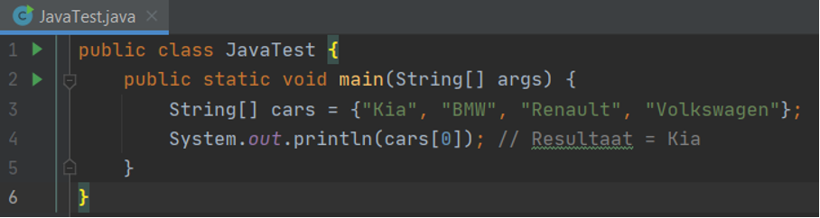
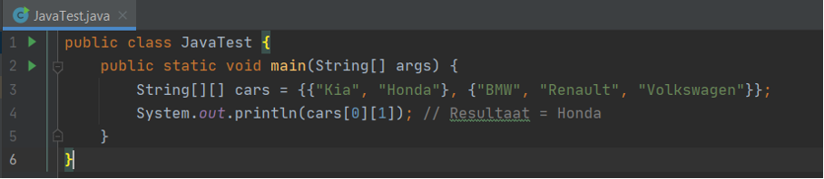
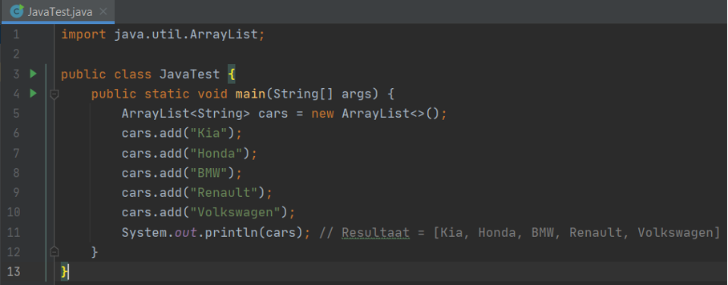
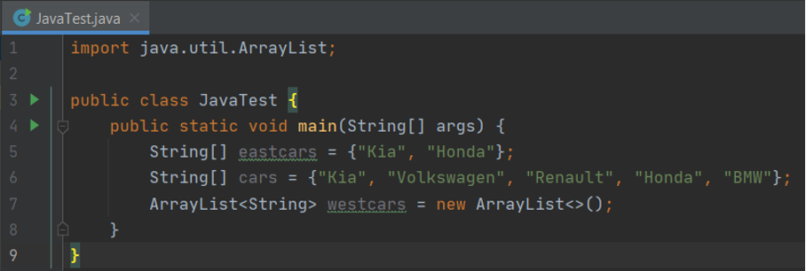

Object
Een object bevat eigenschappen van het object (variabelen) en wat er moet gebeuren (gedrag). Methods noem je ze. (denk aan functies)
Class
Een class is een blauwdruk van een object. Bijv potlood hoort tot de klasse schrijfwaren. Brood hoort tot de klasse etenswaren.
Package
Package is een groep van vergelijkbare soorten klassen, interfaces en sub-packages. Package worden in Java gebruikt om naamconflicten te voorkomen, toegang te controleren, zoeken / lokaliseren en gebruik te maken van classes, interfaces, opsommingen, annotaties enz. Hoewel interfaces en classes met dezelfde naam niet in hetzelfde packages kunnen voorkomen, kunnen ze verschijnen in verschillende packages. Dit is mogelijk door aan elk package een aparte naam toe te wijzen.
Constructor
Constructor kijkt naar de class. je roept een Constructor aan met een naam. Een Constructor geeft aan hoe een class opgebouwd moet worden. Er onstaat dan een nieuw object.
Instance
Instance is variabelen declareren. De eigenschappen van een object. Na de class volgt de instance variable.
Method
Method is het gedrag.
Local variables
Local stopt na de code block. Het kan niet opgeroepen worden.
Instance variables
Na de class volgt de instance variable. Dit kan aangeroepen worden. Instance is als let.
Class or static variables
static is net als const. Het staat vast.
a. Waar wordt een local variable gedeclareerd?
Een local variable in Java is een variabele die wordt gedeclareerd in de body van een method. De variabele kan dan alleen binnen die method, block of Constructor gebruikt worden.
Class/Static variables en Instance variables worden op dezelfde plek gedeclareerd, en houden ook allebei de gegevens van een Object bij.
b. Wat voor soort informatie sla je op in een instance variable?
Eigenschappen van het object
c. Wat voor soort informatie sla je op in een class variable?
De waarde van een class variable kan je in principe ook opslaan in een instance variable.
d. Wat is het voordeel van het gebruiken van een class variable?
ACM
ACM is de toeganglijkheid van een object
Je kan het niet aanroepen en veranderen vanbuiten de class.
Dit is standaard. Het kan niet buiten de package (model)
Via een child class heb je toegang via de package of buiten de paackage.
Je hebt overal, vanuit binnen, maar ook vanuit buiten toegang.
Static en Final zijn const. Ze zijn niet aanpasbaar.
a. Wat is een voordeel van Strict Typing?
Je kan niet snel fouten maken en anders heb je het snel gevonden.
b. Wat is een voordeel van Weak Typing?
Je bent flexibel.
a. Kan je een reden bedenken waarom deze parameter verplicht is?
Anders runt je programma niet.
System.out.println() wordt gebruikt om tekst weer te geven in de console. Voor debugging doeleinden kan je dit net zo gebruiken als de console.log() command van JavaScript. Arrays declareer je zo:
b. Kan je elementen van een Java Array veranderen?
Ja dit kan je veranderen.
c. Kan je elementen aan een Java Array toevoegen?
Ja je kan ook elementen toevoegen aan een java array.
Net als bij JavaScript worden Arrays vaak gebruikt in combinatie met Loops. In de volgende opdracht gaan we hier verder op in.
Met Java kan je gebruik maken van arrays in arrays. Java noemt deze 2-Dimensional Arrays. Dit ziet er als volgt uit:
Bij de vorige opdracht heb je geleerd dat je de grootte van een Java Array niet aan kan passen. Als je dit wel wil doen, moet je gebruik maken van een ArrayList. Belangrijk! Voordat je een ArrayList kan gebruiken, moet je dat eerst in je eigen code aangeven. Dit doe je door de ArrayList code te importeren. Voorbeeld van een ArrayList:
Je importeert de code van een ArrayList dus uit de java.util package.
Loops werken in Java net zoals je dat in JavaScript gewend bent. Ook conditions zijn heel erg vergelijkbaar. Er zijn hier en daar enkele kleine verschillen in de syntax, maar in gebruik zijn ze vrijwel identiek. Gegeven de volgende code:
a. Maak gebruik van een for loop om de eerste drie items uit het cars Array te printen.
Antwoord: Zo ziet de code in java eruit:
package com.javak;b. Maak gebruik van een for-each loop om alle items uit het cars Array te printen.
Antwoord: Code in java is:
package com.javak;Zoals je ziet is de ArrayList westcars nog leeg - nu gaan we die vullen.
c. Loop door het cars array en vergelijk deze met de items in het eastcars array. Als je item niet in het eastcars array voor komt, voeg je hem toe aan het westcars array.
Vervolgens willen we onze Arrays en ArrayList mooi alfabetisch sorteren. Net als ArrayLists is hier een class voor die je moet importeren uit de java.util package.
d. Pas dit nu toe op de Arrays en ArrayLists die je hebt gemaakt